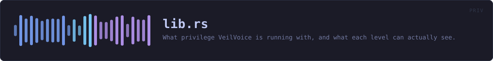

crates/veilvoice-priv/src/lib.rs
veilvoice-priv · 406 lines · read the source here · or on GitHub
What privilege VeilVoice is running with, and what each level can actually see.
Three levels, and the third one this project does not ship
Level::User— VeilVoice as you. Everything the de-identifier does happens here, and nothing about the engine, the container format or the app lock needs any more than this.Level::Elevated— running as administrator or root. The monitoring features see further: processes belonging to other users, service accounts, and a few registry and system paths that are unreadable otherwise.- Kernel level — not shipped, and not for want of trying. Loading a kernel driver on 64-bit Windows needs an EV code-signing certificate issued to a verified legal entity plus Microsoft's attestation signing; macOS needs an Apple Developer ID and an entitlement granted case by case. Both are identity checks, and this project is published under a pseudonym on purpose.
NO_KERNELsays so in the words a front end should show.
This crate does not elevate anything
It reports. It does not re-launch VeilVoice as administrator, install a service, or ask for a password. Those are changes to somebody's machine and they belong to the person whose machine it is: Level::how_to_raise prints the command, and they type it.
That is not caution for its own sake. A privacy tool that silently acquires administrator rights is a privacy tool nobody can reason about, and one that installs a background service without being asked is worse — a service outlives the window it was started from, and somebody who tried VeilVoice once should not find it still running next month.
Detection is a measurement, and it can fail
There is no am_i_admin() in the standard library and reaching the real answer is FFI on every platform here. So this asks a tool the system already ships, exactly as veilvoice-watch asks the registry — and when the tool cannot be run, the answer is Level::Unknown rather than a guess.
Unknown is not User. Reporting "not elevated" when the truth is "I could not tell" would understate what VeilVoice can see, which sounds like the safe direction and is not: somebody would conclude a feature is unavailable and stop looking at its output.
In plain words
Most of VeilVoice needs no special permissions at all — changing a voice is something any program can do with your own account.
The parts that watch your machine can see more when VeilVoice is run as an administrator: programs belonging to other accounts, and a few places on the system that are otherwise off limits. This tells you which of those you are currently getting, and how to run it the other way if you want to.
It will not do that for you. Running as administrator, or installing a background service, is a change to your computer and it should be one you made on purpose. And there is a third level — inside the operating system itself — that VeilVoice does not reach and says so rather than implying it does.
WHAT THIS FILE CONTAINS
406 lines defining 8 functions (6 public), 1 type and 3 constants. Everything below is read out of the source, so it cannot disagree with the code.
The types it owns.
enum Levelline 69 — What VeilVoice is running with.
What happens when it runs. These are the ways in: public, and nothing else in this file calls them, so they are what an outside caller reaches first.
Level::labelline 86 — A short name.Level::what_it_seesline 101 — What this level can see, and what it cannot.Level::how_to_raiseline 128 — The command that would run VeilVoice at the higher level.Level::is_full_viewline 140 — Whether the monitoring features are seeing everything they could.levelline 148 — What VeilVoice is running with right now.
reachesunix_level,windows_levelservice_installedline 240 — Whether a background service is installed.
WHAT CALLS WHAT
The functions this file defines, and the calls between them. An edge means the callee's name appears, called, inside the caller's body — a syntactic reading, not a type-resolved one.
The same graph as Mermaid source
%%{init: {"theme":"base","themeVariables":{"background":"#1a1b26","primaryColor":"#1f2335","primaryTextColor":"#c0caf5","primaryBorderColor":"#7aa2f7","secondaryColor":"#16161e","tertiaryColor":"#16161e","lineColor":"#737aa2","textColor":"#c0caf5","mainBkg":"#1f2335","nodeBorder":"#7aa2f7","clusterBkg":"#16161e","clusterBorder":"#2f3549","fontFamily":"ui-monospace, SFMono-Regular, Consolas, monospace","fontSize":"14px"}}}%%
flowchart TD
n_label(["Level::label<br/>line 86"])
n_what_it_sees(["Level::what_it_sees<br/>line 101"])
n_how_to_raise(["Level::how_to_raise<br/>line 128"])
n_is_full_view(["Level::is_full_view<br/>line 140"])
n_level(["level<br/>line 148"])
n_windows_level["windows_level<br/>line 166"]
n_unix_level["unix_level<br/>line 215"]
n_service_installed(["service_installed<br/>line 240"])
n_level --> n_unix_level
n_level --> n_windows_level
click n_label href "https://github.com/tilas01/veilvoice/blob/main/crates/veilvoice-priv/src/lib.rs#L86" "open the source"
click n_what_it_sees href "https://github.com/tilas01/veilvoice/blob/main/crates/veilvoice-priv/src/lib.rs#L101" "open the source"
click n_how_to_raise href "https://github.com/tilas01/veilvoice/blob/main/crates/veilvoice-priv/src/lib.rs#L128" "open the source"
click n_is_full_view href "https://github.com/tilas01/veilvoice/blob/main/crates/veilvoice-priv/src/lib.rs#L140" "open the source"
click n_level href "https://github.com/tilas01/veilvoice/blob/main/crates/veilvoice-priv/src/lib.rs#L148" "open the source"
click n_windows_level href "https://github.com/tilas01/veilvoice/blob/main/crates/veilvoice-priv/src/lib.rs#L166" "open the source"
click n_unix_level href "https://github.com/tilas01/veilvoice/blob/main/crates/veilvoice-priv/src/lib.rs#L215" "open the source"
click n_service_installed href "https://github.com/tilas01/veilvoice/blob/main/crates/veilvoice-priv/src/lib.rs#L240" "open the source"
classDef entry fill:#1f2335,stroke:#7aa2f7,color:#c0caf5
class n_label,n_what_it_sees,n_how_to_raise,n_is_full_view,n_level,n_service_installed entry
classDef helper fill:#1f2335,stroke:#bb9af7,color:#c0caf5
class n_windows_level,n_unix_level helperThis site loads no third-party script, so it cannot run Mermaid; the diagram above is the same nodes and edges drawn by the generator instead. GitHub renders the source below directly.
ITEMS
| Item | Line | Documentation |
|---|---|---|
Level pub enum | 69 | What VeilVoice is running with. |
Level::label pub fn | 86 | A short name. |
Level::what_it_sees pub fn | 101 | What this level can see, and what it cannot. |
Level::how_to_raise pub fn | 128 | The command that would run VeilVoice at the higher level. |
Level::is_full_view pub fn | 140 | Whether the monitoring features are seeing everything they could. |
level pub fn | 148 | What VeilVoice is running with right now. |
windows_level fn | 166 | On Windows, ask whoami /groups for the administrators SID. |
unix_level fn | 215 | Everywhere else, ask id -u. |
service_installed pub fn | 240 | Whether a background service is installed. |
NO_SERVICE pub const | 245 | Why the opt-in service is not shipped, in the words to show. |
NO_KERNEL pub const | 254 | What kernel level would need, and why it is not here. |
NEVER_ELEVATES pub const | 265 | What this crate will not do, and why that is deliberate. |